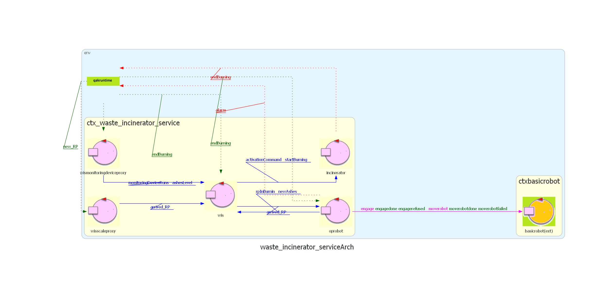

Introduzione
Un'azienda intende realizzare un WasteIncineratorService per trattare i rifiuti bruciandoli e necessita di un servizio di sistema software (WIS) che controlli un robot (chiamato OpRobot) per spostare i rifiuti.
Requisiti
Il seguente link porta al documento dei requisiti fornito dal
cliente.
Documento requisiti
Sprint precedente
Il seguente link porta al documento dello SPRINT precedente, nel
quale si sono sviluppati il MonitoringDevice e la Scale.
SPRINT 2
Architettura iniziale di riferimento
Di seguito viene mostrata un'immagine che rappresenta l'architettura finale dello sprint precedente, che sarà quindi l'architettura iniziale di questo sprint.

{kind=link}
GOAL
In questo SPRINT verranno affrontati i seguenti requisiti:
- Definizione della ServiceStatusGUI
- Interazione WIS - ServiceStatusGUI
Analisi del problema
Definizione della ServiceStatusGUI
I requisiti specificano che la ServiceStatusGUI deve essere un'interfaccia grafica che permetta ad un utente di monitorare la situazione del sistema, in particolare:
- visualizzare lo stato del WasteStorage, come numero di RP attualmente presenti.
- visualizzare lo stato del AshStorage, come livello di capacità attualmente raggiunto.
- visualizzare lo stato del Incinerator, in termini di "sta bruciando oppure no".
- visualizzare lo stato del OpRobot, indicando la sua posizione corrente nell'area di servizio e il lavoro che sta effettuando.
Interazione WIS - ServiceStatusGUI
La principale problematica dell'interazione WIS - ServiceStatusGUI è come far arrivare le info del sistema WIS alla GUI.
Il problema contrario non si pone, in quanto la ServiceStatusGUI è un componente di sola lettura e non è richiesto che invii informazioni per aggiornare il sistema.
I possibili modi per recuperare tali informazioni sono:
- rendere il WIS osservabile dalla GUI.
- far iscrivere la GUI al broker MQTT definito nello sprint precedente e recuperare le informazioni direttamente da lì.
Facendo riferimento al "progetto" dello sprint precedente, le informazioni recuperabili dal broker sono soltanto lo stato del Incinerator, del ashStorageLevel e dell'arrivo di un nuovo RP.
Per sfruttare tale soluzione, si dovrebbero aggiungere nuove publish per gestire anche lo stato del OpRobot.
La soluzione di osservabilità del WIS da parte della GUI non necessita di ulteriori iscrizioni al broker, in quanto ci basta osservare le info del WIS.
In pratica, lasciamo al WIS la responsabilità di ottenere le varie informazioni del sistema (tramite il broker) e la GUI non fa altro che osservare tali info.
Entrambe le soluzioni hanno i loro vantaggi/svantaggi e quindi lasciamo la scelta ai progettisti.
Progetto
Ora ci vogliamo focalizzare su quali tecnologie utilizzare per la definizione dell'interfaccia.
Le principali soluzioni che possono fare al caso nostro sono:
- Applicazione mobile (Android/IOS)
- Applicazione WEB
Definire un'applicazione WEB ci permette di proporre una soluzione in minor tempo, soprattutto se utilizzando tecnologie a container come Spring.
Il principale vantaggio delle tecnologie a container è che ci permettono di demandare al container tutta la parte "di contorno" per la gestione del supporto dei servizi di sistema (ad esempio, attivazione/disattivazione del server, gestione della sessione, ecc.) e quindi evitare al programmatore il cosiddetto "boilerplate" code.
In particolare, Spring è a container leggero, ovvero non è necessario caricare l'intero "pacchetto" ma si possono scegliere soltanto i moduli che ci interessano. (framework modulare. Architettura a layer, possibilità di utilizzare anche solo alcune parti in isolamento)
Infine, il punto di forza principale di Spring è la Dependency Injection, ovvero la possibilità di ottenere una risorsa senza effettuare il binding a mano, ma essa viene fornita in automatico dal container.
Dunque, il container si occupa di risolvere (injection) le dipendenze dei componenti attraverso l’opportuna configurazione dell’implementazione dell’oggetto (push); opposta ai pattern più classici di istanziazione di componenti o Service Locator, dove è il componente che deve determinare l’implementazione della risorsa desiderata.
Struttura della wisFacade
L'applicazione spring in questione è composta da una parte di backend e da una di frontend (per la quale si è deciso di adottare come protocollo di comunicazione le websocket, in quanto permettono di, tramite una sola connessione tcp, ricevere aggiornamenti in tempo reale dal backend dell'applicazione senza bisogno di ricaricare l'intera pagina).La wisFacade è stata strutturata su diversi componenti:
- FacadeBuilder: crea i componenti dell'applicazione
- FacadeController: funge da entrypoint dell'applicazione
- ApplGuiCore: a questo componente viene demandato lo smistamento dei messaggi dal broker ai client websocket
- WSHandler: designato per l'interazione con i client web tramite websocket
- MqttFacadeClient: pensato per l'interazione con il broker MQTT

Interazione WIS-WISFacade
Riguardo l'interazione tra WIS e WISFacade, si presentano due possibili protocolli di comunicazione:- MQTT (publish/subscribe): questo tipo di interazione permette di ottenere un disaccoppiamento maggiore tra i nodi dell'applicazione e di apportare meno modifiche allo sprint precedente
- COAP: questo tipo di interazione permetterebbe di aumentare l'accoppiamento tra il WIS e la facade (permettendo tra le altre cose di verificare in tempo reale che il WIS non presenti guasti), ma costringerebbe ad un refactoring più sostanzioso del modello Qak
Rimane da discutere con il committente se la facade deve potersi accorgere (ad esempio tramite un meccanismo di timeout) se i nodi dell'applicazione stanno mandando regolarmente aggiornamenti riguardo il loro stato.
Per poter permettere l'utilizzo di questo paradigma sono comunque state necessarie alcune modifiche:
- Lato Monitoring Device: all'evento di tipo ashStorageState è stato aggiunto
un secondo payload che indica il livello di riempimento dell' Ash Storage.
Quindi, l'attore monitoringdevice invia aggiornamenti relativi al suo stato ogni
volta che vi sono variazioni nella distanza misurata.
Il modello aggiornato si può trovare qui - Lato scale: dovendo l'interfaccia grafica monitorare il numero di RP presenti
nel WasteStorage, gli aggiornamenti da parte della scale vengono ora fatti comunicando
direttamente questo dato (a differenza di prima, che venivano inviati aggiornamenti
che notificavano soltanto l'arrivo di un nuovo RP).
Il modello aggiornato si può trovare qui - Lato WIS: sono stati introdotti due nuovi eventi (opRobotState e opRobotJob)
da inviare al broker MQTT a fronte di update dello stato dell'opRobot (HOME, WASTEIN, etc)
e del lavoro che sta svolgendo.
Inoltre, a livello di proxy si è deciso di introdurre un ulteriore attore ausiliario raspberryinfocontroller che permetta al WIS di ricevere sempre dati aggiornati: quest'ultimo ora effettua un updateResource che notifichi chiunque sia iscritto che è pronto a prendere un nuovo RP. Ricevuto questo messaggio, raspberryinfocontroller può notificare l'arrivo di un RP al WIS, oppure comunicargli che l'Ash Storage è pieno. Contestualmente a ciò, questo attore ausiliario mantiene lo stato aggiornato del monitoring device, della scale, e del wis stesso, in modo tale da poterlo aggiornare nel momento in cui il WIS si trova nello stato iniziale di attesa.
Grazie all'introduzione di quest'entità, si è riusciti ad alleggerire i compiti del wis e a permettergli di ricevere aggiornamenti "up to date" e al momento giusto. Il modello aggiornato si può trovare qui
Sicurezza dei dati
Sarebbe stato incompleto non includere una discussione riguardo le misure di sicurezza da predisporre, trattandosi di un'applicazione web accessibile dall'esterno.In particolare, l'applicazione spring permette ai client di leggere lo stato dei nodi del sistema, ma non permette in alcun modo di ricevere messaggi dai client. Va sottolineato anche il fatto che i dati forniti dall'applicazione non sono da ritenersi sensibili.
In ogni caso, la mancanza di un meccanismo di autenticazione potrebbe permettere a malintenzionati di effettuare più facilmente attacchi di tipo DoS. Inoltre, la mancanza di cifratura di messaggi potrebbe permettere a dei malintenzionati, tra le altre cose, di effettuare attacchi di tipo "man in the middle": questo consentirebbe loro di manomettere le informazioni che provengono dall'applicazione spring verso i client.
Riguardo questo specifico requisito di sicurezza si è deciso di demandare la questione al committente.
RaspberryMockFacade
Si è deciso di fornire anche un'alternativa per far partire l'applicazione senza necessariamente essere in possesso di un raspberry pi. Di conseguenza si è pensato ad un'applicazione grafica per poter mandare messaggi al broker MQTT sostituendo di fatto il monitoring device e la scale.L'interfaccia grafica fornita è la seguente:
Si noti come, per quanto riguarda lo stato dell'AshStorage, si è deciso di permettere agli utenti di specificare soltanto lo stato di riempimento, e non il livello di cenere effettivo. Questa decisione è dovuta principalmente ad una maggiore facilità di utilizzo da parte dell'utente. Inoltre, facendo un parallelismo con la controparte fisica, un osservatore in ogni istante riesce a percepire tangibilmente se l'AshStorage è pieno, vuoto oppure ad un livello intermedio, ma non l'esatta distanza percepita dal sonar.
Per realizzare l'applicazione si è deciso di usare spring, come del resto si è fatto per la wisfacade, per gli stessi motivi.
Si è deciso di integrare l'applicazione spring con un modello QAK. In questo modo si permette di avere un maggiore disaccoppiamento tra la parte dell'interazione con l'utente (tramite spring) e la parte di interazione tra il nodo del mock e il broker MQTT.
Il modello QAK
Per quanto concerne il modello QAK le entità in gioco sono monitoringdevice e scale. Al fine di liberare questi due componenti dall'onere di dover comunicare con l'applicazione spring, si è deciso di introdurre un apposito attore ausiliario raspberrymockproxy, al quale viene delegato questo compito.Del resto, monitoringdevice e scale sono stati presi uguali ai loro corrispondenti fisici, ad eccezion fatta per il modo in cui il monitoringdevice aggiorna il livello dell'ashStorage. L'interfaccia grafica deve poter permettere all'utente di stabilire il livello di riempimento, ma non permette di specificare una stima del livello dell'ashStorage. Di conseguenza, il monitoringdevice invia lo stato di riempimento, e insieme il valore massimo corrispondente a quel determinato stato (se lo stato è "EMPTY" o "NORMAL" manda il livello corrispondente al contenitore vuoto. Se invece è "FULL" manda il livello corrispondente al contenitore pieno ).
Di seguito si trova il modello QAK
L'applicazione spring
L'applicazione spring si struttura in modo simile al caso della wisfacade, ed è composta da:- FacadeBuilder: crea i componenti dell'applicazione
- FacadeController: funge da entrypoint dell'applicazione
- ApplGuiCore: a questo componente viene demandato l'aggiornamento agli altri client websocket e dell'attore raspberrymockproxy
- WSHandler: designato per l'interazione con i client web tramite websocket
Piano di test
Avendo a che fare con un'applicazione Spring, questa tecnologia ci da la possibilità di effettuare dei test automatizzati tramite l'annotazione @SpringBootTest; a tal proposito il test prevede di effettuare una richiesta GET verso il server che dovrà restituire la pagina html relativa alla RobotFacade.
- TestRobotFacade: posizionarsi sulla directory /sprint3/progetto/wisFacade ed eseguire ./gradlew test
Per visualizzare l'output del test aprire la pagina al seguente link.
Il test automatizzato può essere trovato qui.
Deployment
Deployment con gradle
Per poter provare questo primo prototipo del sistema, occorre eseguire i seguenti componenti nel seguente ordine:
- Ambiente di simulazione VirtualRobot: posizionarsi nella cartella it.unibo.virtualRobot2023, aprire un terminale e lanciare il comando docker compose -f .\virtualRobot23.yaml up;
- BasicRobot: posizionarsi nella cartella unibo.basicrobot24, aprire un terminale e lanciare il comando gradlew run;
- WasteIncineratorService: posizionarsi nella cartella sprint2, aprire un terminale e lanciare il comando gradlew run;
Contemporaneamente a quanto fatto per avviare il WIS, occorre avviare dai due nodi diversi su cui risiedono rispettivamente la logica della Scale e del MonitoringDevice i relativi contesti. Per farlo occorre:
- Creare un eseguibile sia per il MonitoringDevice che per la Scale eseguendo ./gradlew distZip;
- Copiare il file zip generato su entrambi i raspberry;
- Unzippare il file e lanciare il file eseguibile della sottocartella bin.
Deployment con docker
Si è scelto di effettuare anche il deployment con docker in modo da ottenere una soluzione containerizzata, già pronta all'uso, che permettesse di disaccoppiare ulteriormente i vari nodi del sistema e che permettesse di introdurre degli aspetti di sicurezza (come l'autenticazione e la cifratura con TLS dei messaggi tra i vari contesti). Come prima cosa, per ogni entità coinvolta è stato creato un Dockerfile, che si può trovare nelle rispettive cartelle, nel quale si possono trovare maggiori istruzioni su come fare build delle varie immagini. Per ognuna delle immagini che si collegano al broker MQTT è stato predisposto un opportuno supporto tramite stunnel che permettesse di effettuare mutua autenticazione e di cifrare il traffico scambiato con il broker. In questo modo si riesce a proteggere il sistema sia da tentativi di lettura da parte di utenti esterni dello stato dei vari dispositivi, sia da tentativi di intrusione del sistema. Una volta fatto questo, posizionarsi su sprint2/progetto/wis ed eseguire:docker-compose -f wis.yaml up
in modo da lanciare in una volta sola virtual robot, basic robot, mqtt broker, e wis. Per avviare il monitoring device e la scale sul raspberry, scaricare le immagini di monitoringdevice e scale ed eseguire:
docker-compose -f raspberry.yaml up
Chiaramente dopo aver trasferito il file raspberry.yaml e il file stunnel.conf.
Per far partire la versione del wis con i mock al posto del raspberry eseguire:
docker-compose -f wis_mock.yaml up
Alternativamente, in modo tale da poter effettuare il deployment direttamente sui nodi del sistema in maniera automatica, si potrebbe optare per uno strumento come docker swarm. Tra le altre cose, consentirebbe anche una cifratura del traffico tra i container senza che questa venga gestita all'esterno come viene fatta ora.
Suddivisione dei compiti
- Analisi del problema: tutti i membri hanno contribuito, in particolare per discutere i vantaggi/svantaggi delle soluzioni proposte.
- Progettazione: tutti i membri hanno contribuito, in particolare:
- Tutti: discusso assieme i vantaggi/svantaggi dell'uso di un metodo publish/subscribe anziché updateResource.
- Bryan: ragionato su vantaggi/svantaggi di gui sviluppata come applicazione mobile/web e implementazione della pagina della GUI.
- Gabriele ed Emanuele: creazione/modifica dei componenti lato Facade e lato qak.
- Gabriele: creazione raspberrymockfacade e deployment
- Testing: piano dei test deciso assieme. L'effettiva realizzazione è stata affidata a Gabriele.
Sprint futuri
Nel prossimo sprint si prevede di implementare il robot fisico.